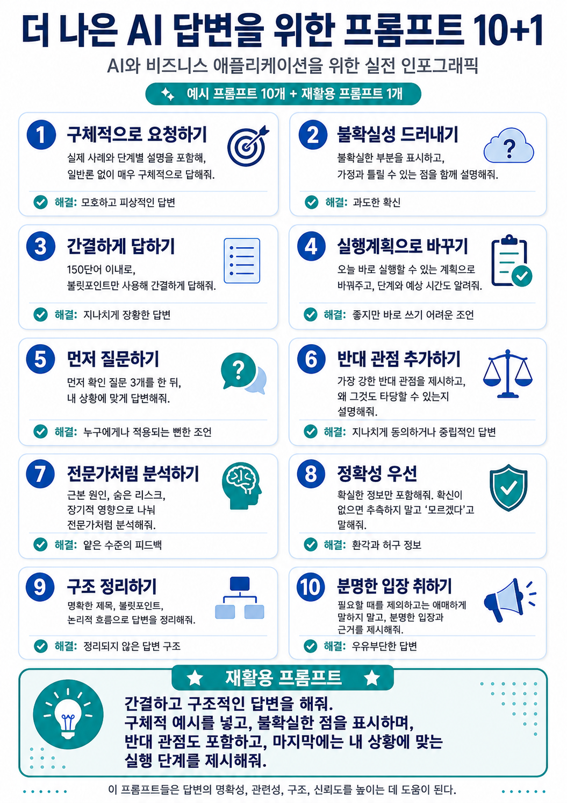
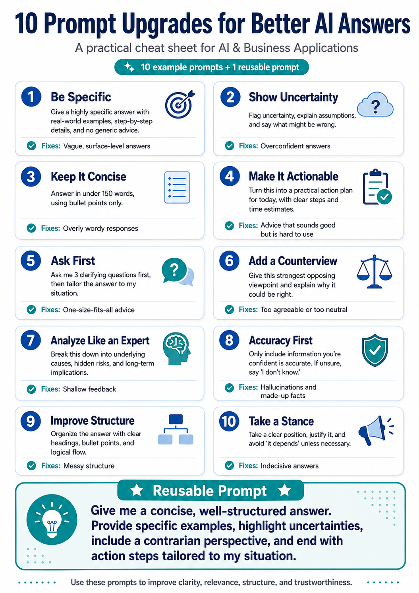
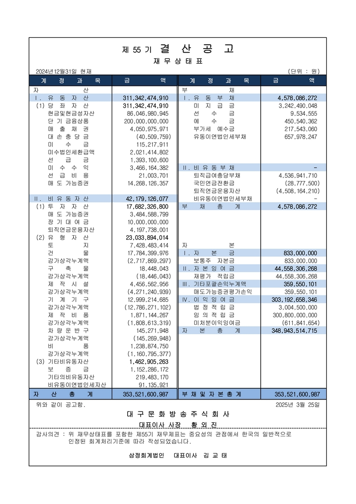
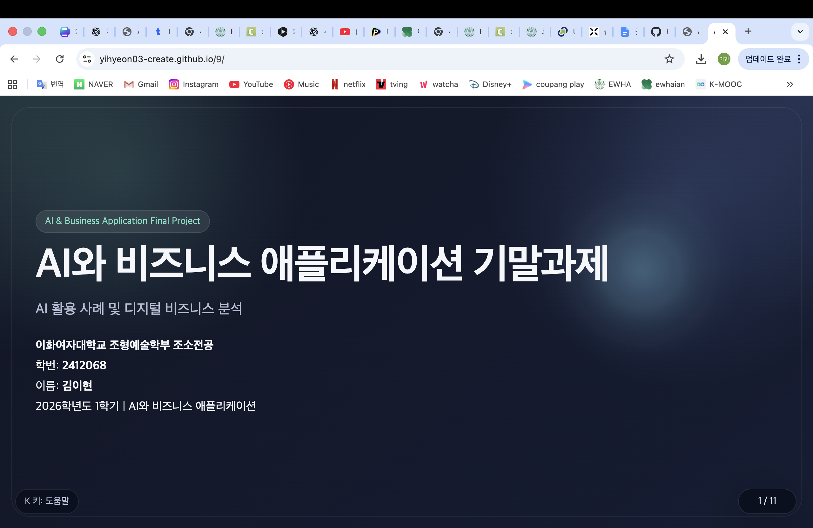

AI & Business Application Final Project
AI와 비즈니스 애플리케이션 기말과제
AI 활용 사례 및 디지털 비즈니스 분석
AI 활용 사례 및 디지털 비즈니스 분석
이화여자대학교 조형예술학부 조소전공
학번: 2412068
이름: 김이현
2026학년도 1학기 | AI와 비즈니스 애플리케이션
Tom's Guide 기사에서 제시한 프롬프트 개선 방식을 한국어 인포그래픽으로 정리하였다.

This English infographic summarizes the prompt improvement methods introduced in the Tom's Guide article.

기사 속 10개 프롬프트는 역할·맥락·작업·형식·제약조건을 조합해 답변 품질을 통제하는 기능적 프롬프트의 사례로 볼 수 있다.
기사 대응: 전문가처럼 분석하기
AI에게 전문가 관점을 부여하면 근본 원인, 숨은 위험, 장기적 영향을 더 구조적으로 해석하게 된다.
기사 대응: 먼저 질문하기
추가 질문을 통해 부족한 맥락을 수집하면 일반론이 아닌 상황 맞춤형 답변의 정확도가 높아진다.
기사 대응: 구체적으로 요청하기
무엇을 분석하고 어떤 수준으로 답해야 하는지 명확히 지시하면 산만한 답변이 줄어든다.
기사 대응: 간결하게 답하기, 구조 정리하기
짧게 요약하기, 항목별 정리, 단계별 제시는 결과물의 가독성과 활용 가능성을 높인다.
기사 대응: 불확실성 드러내기, 정확성 우선
모르면 모른다고 말하게 하거나 과도한 애매함을 줄이면 피상적 답변과 환각 가능성을 낮출 수 있다.
기사 속 10개 프롬프트는 기능적 프롬프트의 핵심 구성 요소를 실제 사용 상황에 맞게 재배치한 예시다.
좋은 프롬프트는 모호함을 줄이고 신뢰성과 실행 가능성을 높이는 방식으로 AI의 사고 경로를 설계한다.
기사 대응: 실제 사례 요청, 단계별 설명
예시와 절차를 요구하면 모호한 일반론 대신 분명한 답변을 얻을 수 있다.
기사 대응: 불확실성 명시, 가정 드러내기
확신 수준과 전제를 함께 표시하게 하면 거짓 정보나 과장된 확신의 가능성을 줄인다.
기사 대응: 반대 관점 추가
반론과 대안을 함께 제시하게 하면 AI의 동조적 답변을 보완할 수 있다.
기사 대응: 실행계획으로 바꾸기
원론적인 조언을 실제 행동 단계와 우선순위로 바꾸면 답변은 의사결정 도구가 된다.
기사 대응: 정확성 우선, 분명한 입장 취하기
확인 가능한 범위에서 답하게 만들면 과도한 포장과 우유부단함을 줄일 수 있다.
기사 속 10개 프롬프트는 기능적 프롬프트의 구성 요소와 작동 원리를 비교적 충실히 반영한다.
교수님이 제공한 원본 재무상태표 이미지를 먼저 제시하고, 다음 슬라이드에서 핵심 수치를 요약한다.

총자산, 총부채, 총자본을 기준으로 보면 이 기업은 자본 중심 구조가 강한 안정적 기업으로 해석할 수 있다.
총부채가 총자본에 비해 매우 작아 재무 부담이 낮은 편이다. 이는 외부 충격에 대한 완충력이 높다는 뜻으로 해석할 수 있다.
총자산 대부분이 자본으로 구성되어 있어 재무 안정성이 높다. 외부 자금보다 내부 자본에 기반한 구조라는 점이 특징이다.
외부 차입 의존도가 낮아 채권자 입장에서는 신용 위험이 낮게 보일 수 있다.
안정성이 높다는 것이 곧 성장성이 높다는 뜻은 아니다. 실제 경영성과는 손익계산서와 수익성 자료를 함께 봐야 한다.
같은 재무상태표라도 투자자, 채권자, 경영진은 서로 다른 목적에서 숫자를 해석한다.
개인 GitHub 저장소와 GitHub Pages 링크를 연결해 수업 과제를 웹 형태로 배포한 결과를 정리한 슬라이드다.
GitHub Repository 링크
https://github.com/yihyeon03-create/9
GitHub Pages 링크
https://yihyeon03-create.github.io/9/
저장소 이름은 9로 통일했으며, QR 코드와 배포 주소를 함께 제공해 발표 중 빠르게 접속할 수 있도록 구성했다.

AI를 생산성 향상 도구로만 볼 것이 아니라, 노동시장, 규제, 윤리, 보안과 연결된 비즈니스 이슈로 함께 이해할 필요가 있다.
핵심 내용: 생성형 AI가 반복 업무, 문서 작성, 고객 응대 영역으로 확대되고 있다.
비즈니스 관점: 기업은 AI를 업무 프로세스 개선 수단으로 도입해야 한다.
핵심 내용: AI가 일부 직무를 대체할 수 있지만 동시에 새로운 역할과 역량을 요구한다.
비즈니스 관점: 기업은 직무 재설계와 재교육 전략을 함께 고려해야 한다.
핵심 내용: AI 활용이 확대되면서 개인정보, 저작권, 편향성, 책임성 문제가 중요해지고 있다.
비즈니스 관점: AI 도입 기업은 신뢰와 책임 경영을 확보해야 한다.
핵심 내용: AI는 보안 탐지에 활용되지만 해킹 자동화와 피싱 고도화에도 사용될 수 있다.
비즈니스 관점: 기업은 AI 활용 확대와 함께 보안 대응 체계를 강화해야 한다.
아래 소감문은 자동으로 천천히 스크롤되며, 스크롤바는 표시되지 않는다.
이 슬라이드는 전체 화면 발표 형식으로 구성되어 있으며 키보드와 마우스로 이동할 수 있다.
ESC 키를 누르면 이 창이 닫힌다.